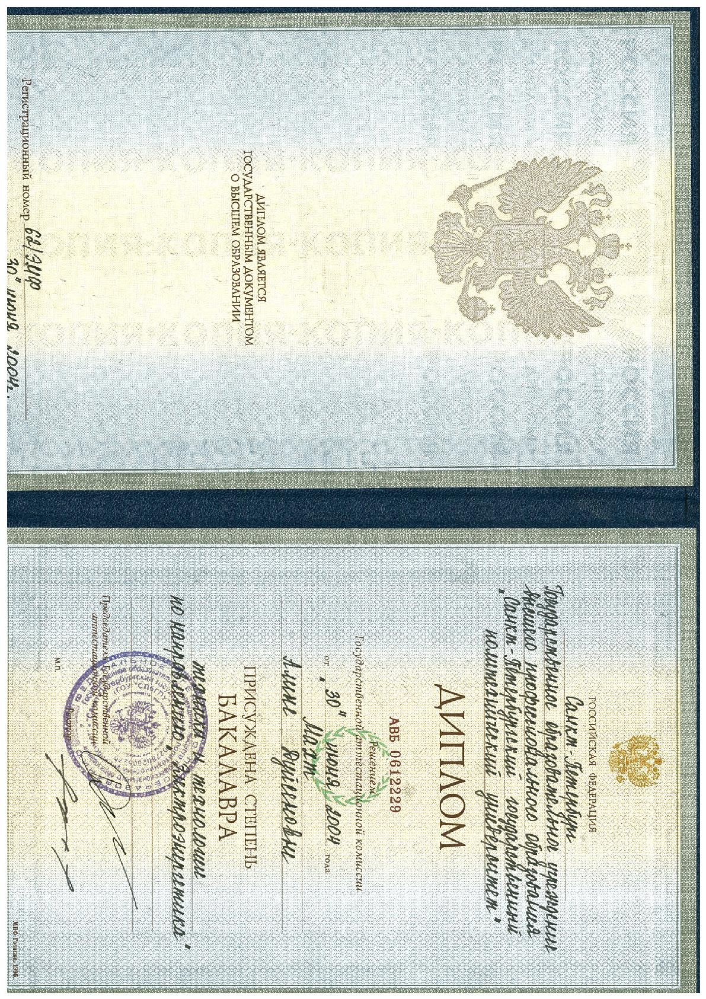
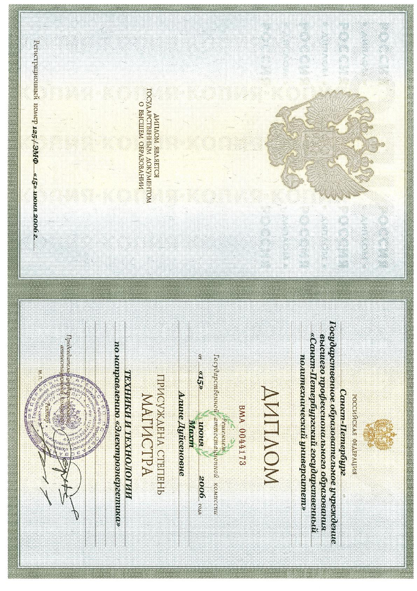

1999-2004Диплом бакалавра техники и технологии по направлению «Электроэнергетика»

2004-2006Диплом магистра техники и технологии ВМА 0044173 по направлению «Электроэнергетика»

2006Сертификат«Проектирование, эксплуатация и монтаж распределительных сетей 6-35 и 0,4кВ, их защита и автоматизация»
2007Свидетельство«Электрические сети и электрооборудование (особенности проектирования различных зданий, в том числе интеллектуальных)»
2013Сертификаткурс «AutoCAD»
2014Удостоверение о повышении квалификации«Расчеты токов КЗ и уставок релейной защиты в электроэнергетических системах»
2021Диплом о профессиональной переподготовке«Специалист по тестированию в области информационных технологий» (06.004)
2015Сертификат об обучении корейскому языку, начальный этап